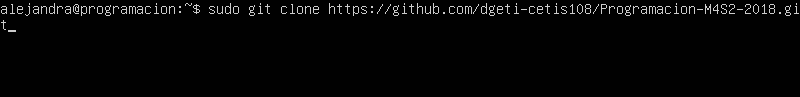

Para clonar el repositorio tenemos que movernos a la carpeta html con el comando cd /var/www/html, ya que nos movamos de carpeta tenemos que insertar el siguiente comando
Ya que este clonado el repositorio tendremos que cambiarle el nombre con el comando